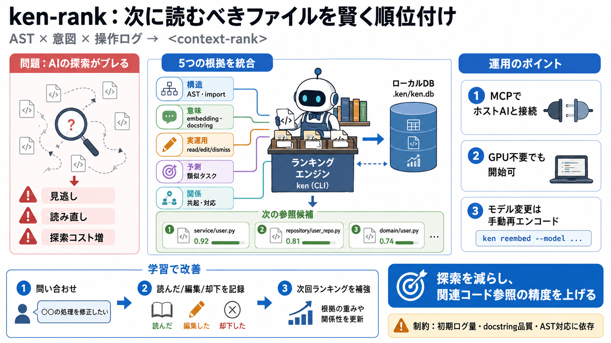

返り値
<context-rank>

ローカルで賢い文脈
ken-rank（CLI: ken）は、コーディングAIが次に参照すべきファイルを、ローカルで学習・ランキングする仕組みです。
探索の手戻り
多くのAIは毎プロンプトでリポジトリを手当たり次第に探索し、参照先がブレて探索コストが増えます。
図書館の司書
kenは単なる検索ではなく、「過去に役立った根拠（構造・意味・履歴）」を材料に、次の文脈候補を並べます。
ローカル・インデックス
インデックスはローカルに構築され（例：.ken/ken.db）、プロンプト前に候補を最適候補から提示します。
統合ランキング
kenは、構造・意味・実運用の証拠・予測メモリ・関係ブーストを統合して、<context-rank>を作ります。
学習が効く
数回の実セッションで精度が上がりやすいのは、証拠（役立った/却下された根拠）がローカルDBに蓄積されるためです。
ホストAIとの接続
Claude Code / Codex / OpenCodeのようなホストAIは、MCP（Model Context Protocol）経由でkenのツールを呼び出せる点が重要です。
埋め込みの選択肢
埋め込みモデルは「軽量テーブル方式（デフォルト）」と「torchバックエンド（例：Qwen3）」を選べます。
再エンコード方針
モデル変更は「勝手に再エンコードしない」方針です。再計算が必要なら、明示的に ken reembed --model ... が必要になります。
GPU不要の現実
GPUは必須ではありません。デフォルト方式はGPU不要で、埋め込みクエリ自体が非常に速い想定です。
MCP失敗の典型
MCPサーバの起動失敗は、依存関係の不整合（例：mcp SDKの依存ピン）由来で起き得ます。再インストール手順が提示されています。
期待値と制約
ken導入で改善は“しやすい”ものの、AST解析できるか、docstringの質、初期インデックス、ログ蓄積量に依存します。
要点まとめ
kenは探索コストを下げ、プロジェクト理解を強化して、関連コード参照の精度（＝開発効率と品質）を押し上げるツールです。
参考（概念）
本デッキはユーザー提示の要約文から、kenの設計要点を再構成したものです（公式ドキュメント/リポジトリで用語と手順を最終確認してください）。
No references found